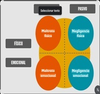

Causas
La violencia es un fenómeno social complejo que ha sido objeto de estudio desde diferentes perspectivas, como la sociología, la psicología y la criminología. A lo largo del tiempo, se han propuesto diversas teorías para explicar las causas de la violencia, incluyendo factores sociales, culturales, psicológicos y biológicos. En este informe, se abordará algunas de las principales causas de la violencia entre seres humanos y se dará respuesta a la pregunta de si la violencia tiene causas genéticas, tomando en cuenta los conceptos del síndrome de Jakob, el gen del mal y el gen MAO-A. Previamente, y con el fin de contextualizar la materia, se hará una breve introducción acerca de las principales causas de la violencia, realizando una especial parada en cuanto acontece a los factores biológicos y genéticos que pudieran predisponer a ella.